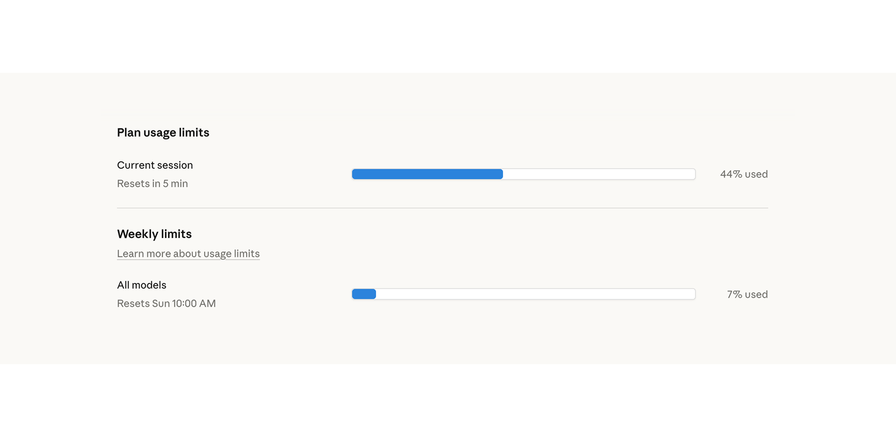
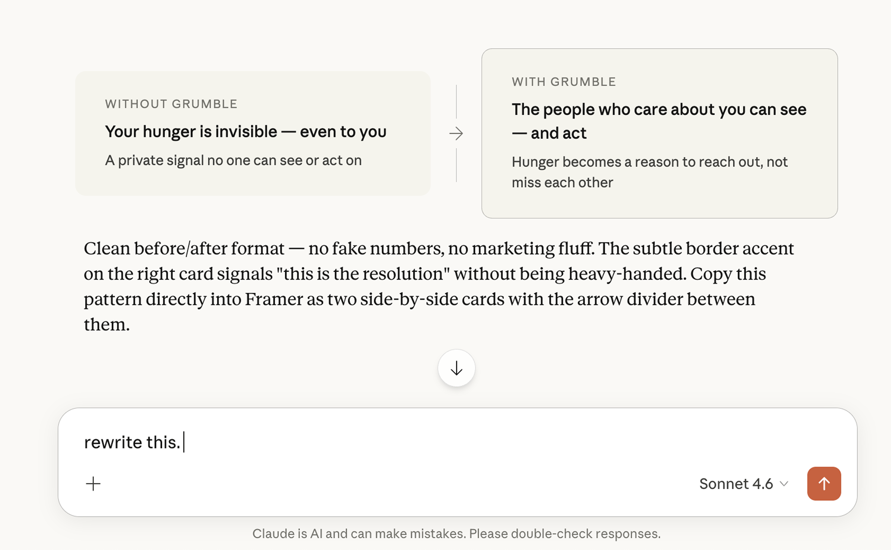
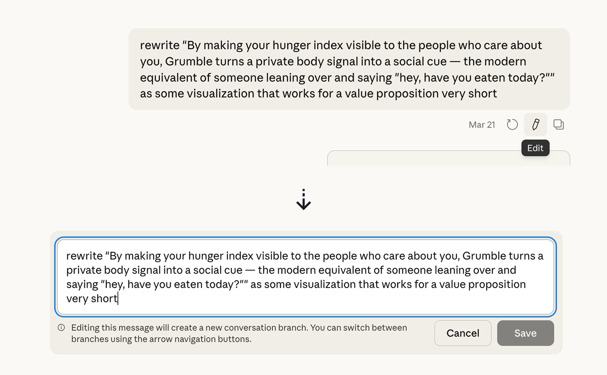

I've used all my tokens in two weeks for a monthly subscription. I was stunned, so I looked around for ways to efficiently use them. One token is roughly three quarters of a word. Every message I send, and every response Claude sends back, adds to the running total that Claude has to re-read from scratch on every subsequent turn.
A short conversation is cheap. A long one with back and forth corrections can burn through days of tokens in an afternoon.

Habits I wished I adapted
If I have a time machine to go back in time, I would practice the habits below to save the money.
Edit your message, do not send a follow-up
When Claude gets something wrong, the instinct is to send a correction in a new message. This is the most expensive habit you can have. Every new message adds to the conversation history.


Over a long working session this single habit reduces token use by 80 to 90 percent.
Start a fresh chat every 15 to 20 messages
Conversations get exponentially heavier the longer they run. When a chat starts feeling sluggish, it is time for a reset.

- 1Ask Claude: summarise where we are up to in four sentences.
- 2Open a new chat.
- 3Paste the summary in as your first message and continue.
Batch your questions
Three separate messages means three separate context loads. One message with three questions means one. List everything you need in a single message.

Upload recurring files to Projects
Projects cache your uploaded files so they do not eat into your token limit on each individual conversation. Anything you upload more than twice should live in a Project.
Set up Memory and User Preferences
Every conversation started without context costs 3 to 5 messages just re-establishing who you are and how you work.
Go to Settings, write it once, stop paying for it every single time.